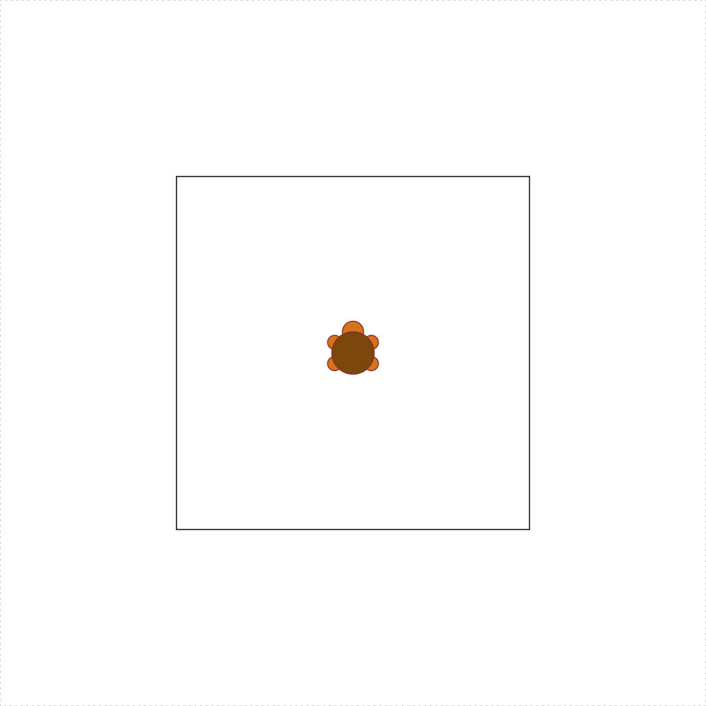

Homework 2 - Functions
Due: Sunday, 22-Sept. at 8pm
Rules:
- Problems marked SOLO may not be worked on with other classmates, though you may consult instructors for help.
- For problems marked COLLABORATIVE, you may work in groups of up to 3 students who are in this course this semester (and then with nobody else except the course instructors). You may not split up the work – everyone must work on every problem. And you may not simply copy any code but rather truly work together.
- Even though you work collaboratively, you still must submit your own solutions.
Instructions:
Before beginning this assignment, be sure to have read the Getting Started, Programming Basics, and Functions lessons.
Open RStudio and create a new project called “hw2-lastName”, replacing “lastName” with your last name.
Download the hw2.R template script and place it in RStudio project folder you just created.
Fill out your name, GW Net ID, and the names of anyone you worked with in the header of the “hw2.R” file.
Type all of your answers to the questions below in the “hw2.R” script.
After completing the questions, create a zip file of all files in your R project folder for this assignment.
Submit the zip file on Blackboard by the due deadline.
Write solutions to the following functions in your “hw2.R” script.
Rules:
- You may NOT use loops on any of these functions.
- For functions 1-7, you may NOT use loops or conditionals
Hint: Read the Getting Started Tips, Programming Basics Tips, and Functions Tips - these could come in handy!
1) integerSquareRoot(n) [SOLO, 5 pts]
Given a non-negative integer n, return the integer value that is closest to its square root. For example, integerSquareRoot(10) returns 3.
2) fabricYards(inches) [SOLO, 5 pts]
Fabric must be purchased in whole yards. Write a function that takes a non-negative number of inches of fabric desired, and returns the smallest number of whole yards of fabric that must be purchased. Thus, fabricYards(1) is 1 (you need a full yard if you buy one inch) and fabricYards(36) is also 1, but fabricYards(37) is 2. Hint: There are 36 inches in a yard!
3) fabricExcess(inches) [SOLO, 5 pts]
Write a function that takes a non-negative number of inches of fabric desired and returns the number of inches of excess fabric that must be purchased (as purchases must be in whole yards). Thus, since you need a whole yard when you buy 1 inch, fabricExcess(1) is 35. Similarly, fabricExcess(36) is 0, and fabricExcess(37) is 35.
Hint: there are (at least) two good ways to write this. One way involves a simple expression using one of the math operators we have learned. The other way uses fabricYards(inches) (which you just wrote!).
4) distance(x1, y1, x2, y2) [COLLABORATIVE, 10 pts]
Given four numeric values representing the points (x1, y1) and (x2, y2), write the function distance(x1, y1, x2, y2) returns the Euclidean distance between those points.
5) isRightTriangle(x1, y1, x2, y2, x3, y3) [COLLABORATIVE, 10 pts]
Given six numeric values representing the points (x1, y1), (x2, y2), and (x3, y3), return TRUE if the triangle formed by connecting the 3 points is a right triangle, and FALSE otherwise. You may wish to use the distance(x1, y1, x2, y2) function as a helper function. You may ignore the case where the 3 points are collinear (and so do not form a triangle). Hint: Pythagorean theorem.
6) triangleArea(x1, y1, x2, y2, x3, y3) [COLLABORATIVE, 10 pts]
Given six numeric values representing the points (x1, y1), (x2, y2), and (x3, y3), return the area of the triangle formed by connecting the 3 points. You may wish to use the distance(x1, y1, x2, y2) function as a helper function. You may ignore the case where the 3 points are collinear (and so do not form a triangle). Hint: Heron’s Formula.
7) numberOfPoolBalls(rows) [COLLABORATIVE, 10 pts]

Pool balls are arranged in rows where the first row contains 1 pool ball and each row contains 1 more pool ball than the previous row. Thus, for example, 3 rows contain 6 total pool balls (1+2+3). With this in mind, write the function numberOfPoolBalls(rows) that takes a non-negative integer value (the number of rows) and returns another integer value (the number of pool balls in that number of full rows). For example, numberOfPoolBalls(3) returns 6. We will not limit our analysis to a “rack” of 15 balls; rather, our pool table can contain an unlimited number of rows. Do not use loops. Hint: For this problem you should research Triangular Numbers.
8) isEvenPositiveInt(x) [COLLABORATIVE, 15 pts]
Given an arbitrary value x, return TRUE if it is an integer, and it is positive, and it is even (all 3 must be true), or FALSE otherwise. If the value x is not an integer, the function should return FALSE rather than error. So, isEvenPositiveInt("yikes!") returns FALSE, and isEvenPositiveInt(123456) returns TRUE. For this problem, consider integer values to be “integers”. So, both 3 and 3L are to be considered integers, even though R will return FALSE if you type is.integer(3), since 3 is technically a “double”. Hint: Read the Programming Basics Tips.
9) getTheCents(n) [COLLABORATIVE, 15 pts]
Write the function getTheCents(n) which takes a value n that represents a payment in US dollars and returns the number of cents in the payment. For example, if n is 2.45, the function should return 45. If n is an integer, the function should return 0, as it has 0 cents; if it isn’t a number, it should return NULL, because a non-number payment make no cents (ha!). If the payment has partial cents (for example, 3.953), it should be rounded to the nearest cent (in this case, 95 cents).
10) turtleSquare(s) [COLLABORATIVE, 15 pts]
Write the function turtleSquare(s) which uses the TurtleGraphics library to draw a square with side length s < 100 (because the turtle will “escape” the terrarium when s >= 100). The square should be centered in the turtle’s terrarium. Note: Do not put the turtle_init() command inside your function - the turtle must be “initialized” inside the terrarium before calling your turtleSquare(s) function. You should call your turtleSquare(s) function inside the turtle_do({}) call as described in the TurtleGraphics lesson. For example, the code below produces a square with side length of 50:
library(TurtleGraphics)
turtle_init()
turtle_do({
turtleSquare(50)
})
Bonus Credit 1) numberOfPoolBallRows(balls) [SOLO, 5 pts]
This problem is the inverse of the numberOfPoolBalls(rows) problem. In this case, return the number of rows required for the given number of pool balls. Thus, numberOfPoolBallRows(6) returns 3. Note that if any balls must be in a row, then you count that row, and so numberOfPoolBallRows(7) returns 4 (since the 4th row must have a single ball in it).
Bonus Credit 2) turtleTriangle(s) [SOLO, 5 pts]
Write the function turtleTriangle(s) which uses the TurtleGraphics library to draw an equilateral triangle with side length s < 100. The triangle should be centered in the turtle’s terrarium. Hint: Getting the triangle centered is the tricky part - you may want to read more about equilateral triangles and apothems. The code below produces a triangle with side length of 50:
library(TurtleGraphics)
turtle_init()
turtle_do({
turtleTriangle(50)
})
George Washington University | School of Engineering & Applied Science
Dr. John Paul Helveston | jph@gwu.edu | Mondays | 6:10–8:40 PM | Phillips Hall 108 | |
This work is licensed under a Creative Commons Attribution 4.0 International License.
See the licensing page for more details about copyright information.
Content 2019 John Paul Helveston